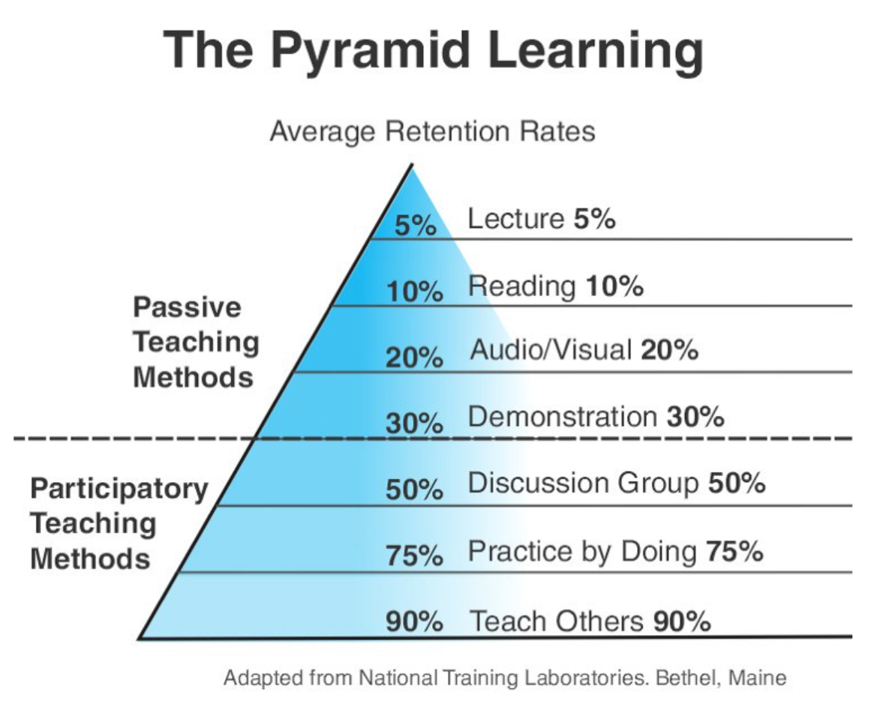

- 000 开篇词 洞悉技术的本质，享受科技的乐趣.md
- 001 程序员如何用技术变现（上）.md
- 002 程序员如何用技术变现（下）.md
- 003 Equifax信息泄露始末.md
- 004 从Equifax信息泄露看数据安全.md
- 005 何为技术领导力.md
- 006 如何拥有技术领导力.md
- 007 推荐阅读：每个程序员都该知道的事.md
- 008 Go语言，Docker和新技术.md
- 009 答疑解惑：渴望、热情和选择.md
- 010 如何成为一个大家愿意追随的Leader？.md
- 011 程序中的错误处理：错误返回码和异常捕捉.md
- 012 程序中的错误处理：异步编程和最佳实践.md
- 013 魔数 0x5f3759df.md
- 014 推荐阅读：机器学习101.md
- 015 时间管理：同扭曲时间的事儿抗争.md
- 016 时间管理：投资赚取时间.md
- 017 故障处理最佳实践：应对故障.md
- 018 故障处理最佳实践：故障改进.md
- 019 答疑解惑：我们应该能够识别的表象和本质.md
- 020 分布式系统架构的冰与火.md
- 021 从亚马逊的实践，谈分布式系统的难点.md
- 022 分布式系统的技术栈.md
- 023 分布式系统关键技术：全栈监控.md
- 024 分布式系统关键技术：服务调度.md
- 025 分布式系统关键技术：流量与数据调度.md
- 026 洞悉PaaS平台的本质.md
- 027 推荐阅读：分布式系统架构经典资料.md
- 028 编程范式游记（1）- 起源.md
- 029 编程范式游记（2）- 泛型编程.md
- 030 编程范式游记（3） - 类型系统和泛型的本质.md
- 031 Git协同工作流，你该怎样选.md
- 032 推荐阅读：分布式数据调度相关论文.md
- 033 编程范式游记（4）- 函数式编程.md
- 034 编程范式游记（5）- 修饰器模式.md
- 035 编程范式游记（6）- 面向对象编程.md
- 036 编程范式游记（7）- 基于原型的编程范式.md
- 037 编程范式游记（8）- Go 语言的委托模式.md
- 038 编程范式游记（9）- 编程的本质.md
- 039 编程范式游记（10）- 逻辑编程范式.md
- 040 编程范式游记（11）- 程序世界里的编程范式.md
- 041 弹力设计篇之“认识故障和弹力设计”.md
- 042 弹力设计篇之“隔离设计”.md
- 043 弹力设计篇之“异步通讯设计”.md
- 044 弹力设计篇之“幂等性设计”.md
- 045 弹力设计篇之“服务的状态”.md
- 046 弹力设计篇之“补偿事务”.md
- 047 弹力设计篇之“重试设计”.md
- 048 弹力设计篇之“熔断设计”.md
- 049 弹力设计篇之“限流设计”.md
- 050 弹力设计篇之“降级设计”.md
- 051 弹力设计篇之“弹力设计总结”.md
- 052 区块链技术 - 区块链的革命性及技术概要.md
- 053 区块链技术 - 区块链技术细节 - 哈希算法.md
- 054 区块链技术 - 区块链技术细节 - 加密和挖矿.md
- 055 区块链技术 - 去中心化的共识机制.md
- 056 区块链技术 - 智能合约.md
- 057 区块链技术 - 传统金融和虚拟货币.md
- 058 管理设计篇之分布式锁.md
- 059 管理设计篇之配置中心.md
- 060 管理设计篇之边车模式.md
- 061 管理设计篇之服务网格.md
- 062 管理设计篇之网关模式.md
- 063 管理设计篇之部署升级策略.md
- 064 性能设计篇之缓存.md
- 065 性能设计篇之异步处理.md
- 066 性能设计篇之数据库扩展.md
- 067 性能设计篇之秒杀.md
- 068 性能设计篇之边缘计算.md
- 069 程序员练级攻略（2018）：开篇词.md
- 070 程序员练级攻略（2018）：零基础启蒙.md
- 071 程序员练级攻略（2018）：正式入门.md
- 072 程序员练级攻略（2018）：程序员修养.md
- 073 程序员练级攻略（2018）：编程语言.md
- 074 程序员练级攻略：理论学科.md
- 075 程序员练级攻略（2018）：系统知识.md
- 076 程序员练级攻略（2018）：软件设计.md
- 077 程序员练级攻略（2018）：Linux系统、内存和网络.md
- 078 程序员练级攻略（2018）：异步IO模型和Lock-Free编程.md
- 079 程序员练级攻略（2018）：Java底层知识.md
- 080 程序员练级攻略（2018）：数据库.md
- 081 程序员练级攻略（2018）：分布式架构入门.md
- 082 程序员练级攻略（2018）：分布式架构经典图书和论文.md
- 083 程序员练级攻略（2018）：分布式架构工程设计.md
- 084 程序员练级攻略（2018）：微服务.md
- 085 程序员练级攻略（2018）：容器化和自动化运维.md
- 086 程序员练级攻略（2018）：机器学习和人工智能.md
- 087 程序员练级攻略（2018）：前端基础和底层原理.md
- 088 程序员练级攻略（2018）：前端性能优化和框架.md
- 089 程序员练级攻略（2018）：UIUX设计.md
- 090 程序员练级攻略（2018）：技术资源集散地.md
- 091 程序员面试攻略：面试前的准备.md
- 092 程序员面试攻略：面试中的技巧.md
- 093 程序员面试攻略：面试风格.md
- 094 程序员面试攻略：实力才是王中王.md
- 095 高效学习：端正学习态度.md
- 096 高效学习：源头、原理和知识地图.md
- 097 高效学习：深度，归纳和坚持实践.md
- 098 高效学习：如何学习和阅读代码.md
- 099 高效学习：面对枯燥和量大的知识.md
- 100 高效沟通：Talk和Code同等重要.md
- 101 高效沟通：沟通阻碍和应对方法.md
- 102 高效沟通：沟通方式及技巧.md
- 103 高效沟通：沟通技术.md
- 104 高效沟通：好老板要善于提问.md
- 105 高效沟通：好好说话的艺术.md
- 106 加餐 谈谈我的“三观”.md
- 107 结束语 业精于勤，行成于思.md
095 高效学习：端正学习态度
在开始这一系列文章之前，我想说，如果你想从我这里得到一些速成的方法，那么你就不用往下看了，学习是不可能速成的。这里只有一些方法和技巧，是我这么多年来行之有效的，分享出来也许对你有帮助。一方面，可能会让你学得更多和更累，另一方面，可能会让你学得更系统、更全面。总之，学习是一件“逆人性”的事，就像锻炼身体一样，需要人持续付出，会让人感到痛苦，并随时想找理由放弃。
大部分人都认为自己爱学习，但是：
- 他们都是只有意识没有行动，他们是动力不足的人。
- 他们都不知道自己该学什么，他们缺乏方向和目标。
- 他们都不具备自主学习的能力，没有正确的方法和技能。
- 更要命的是，他们缺乏实践和坚持。
如果你去研究一下古今中外的成功人士，就会发现，他们基本上都是非常自律的，也都是非常热爱学习的。他们可以沉得下心来不断地学习，在学习中不断地思考、探索和实践。
所以，如果你不能克服自己 DNA 中的弱点，不能端正自己的态度，不能自律，不能坚持，不能举一反三，不能不断追问等，那么，无论有多好的方法，你都不可能学好。所以，有正确的态度很重要。
然后，我会在后面给你一些方法和相关的技能，让你可以真正实际操作起来。
主动学习和被动学习
1946 年，美国学者埃德加·戴尔（Edgar Dale）提出了「学习金字塔」（Cone of Learning）的理论。之后，美国缅因州国家训练实验室也做了相同的实验，并发布了「学习金字塔」报告。

人的学习分为「被动学习」和「主动学习」两个层次。
- 被动学习：如听讲、阅读、视听、演示，学习内容的平均留存率为 5%、10%、20% 和 30%。
- 主动学习：如通过讨论、实践、教授给他人，会将原来被动学习的内容留存率从 5% 提升到 50%、75% 和 90%。
这个模型很好地展示了不同学习深度和层次之间的对比。
我们可以看到，你听别人讲，或是自己看书，或是让别人演示给你，这些都不能让你真正获得学习能力，因为你是在被别人灌输，在听别人说。
只有你开始自己思考，开始自己总结和归纳，开始找人交流讨论，开始践行，并开始对外输出，你才会掌握到真正的学习能力。
举个大家都懂的例子，那就是学习英文，我们从小就是在开始学习英文了，很多人英文成绩可以考得很好，语法也可以不错。然而，哪天真正要和外国人交流的时候，却发现自己的英文能力渣得不要不要的，只会回答：Fine. Thank you, and you? 这就是浅度学习的结果。
我的英文能力也是一样的，直到有一天进到外企，外企请了个外教每周来公司三次和我们练英文，我的英文能力才有一点点进步，然而，还是不够。后来有一天，公司的客户抱怨我们的一线客服处理问题太慢，问我们在后台做开发的人有谁去一线支持客户，我举手了。于是我接了半年来自日本、新加坡、德国、法国、英国等多个国家的客户电话和邮件。
在这期间，我的英文能力直线上升，速度快得不得了。一方面是我要把自己知道的讲给客户听，另一方面要跟客户有交流，所以我学得更努力，也更有效果。主要是日本人和德国人给了我足够的信心，这两个国家的人可能是这世界上最严谨的人，他们非常喜欢打破沙锅问到底，而且他们的英文也不怎么好，但是他们都用很慢的语速来和我交流，一方面是怕他们自己说不好，另一方面是也希望我用慢速的话和他们说。于是，大家都在一种慢速的环境下说英文，把每个单词的音都发准了，这使我提高了英文能力。
后面再跟一些口音很奇葩的老外（比如印度人和法国人）说英文的时候，我就会让他们说慢点，以便我适应他们的口音。几年后，我到了另外一家外国公司工作，需要跟一些口音非常重的印度人和非洲人说英文，我都能听懂，着实把我身边的同事们都震住了。这就是深度学习的最好的例子，要践行！
所以，学习不是努力读更多的书，盲目追求阅读的速度和数量，这会让人产生低层次的勤奋和成长的感觉，这只是在使蛮力。要思辨，要践行，要总结和归纳，否则，你只是在机械地重复某件事，而不会有质的成长的。
浅度学习和深度学习
老实说，对于当前这个社会：
- 大多数人的信息渠道都被微信朋友圈、微博、知乎、今日头条、抖音占据着。这些信息渠道中有营养的信息少之又少。
- 大多数公司都是实行类似于 996 这样的加班文化，在透支和消耗着下一代年轻人，让他们成长不起来。
- 因为国内互联网访问不通畅，加上英文水平受限，所以，大多数人根本没法获取到国外的第一手信息。
- 快餐文化盛行，绝大多数人都急于速成，心态比较浮燥，对事物不求甚解。
所以，你看，在这种环境下，你根本不需要努力的。你只需要踏实一点，像以前那样看书，看英文资料，你只需要正常学习，根本不用努力，就可以超过你身边的绝大多数人。
我们整个世界进入了前所未有的信息爆炸时代，人们担忧的不再是无知识可学，而是有学不完的知识。而且时代的节奏变得越来越快，你可能再也不像 20 年前，可以沉着优雅平和地泡上一杯茶，坐在一个远离喧嚣的环境下，认认真真地看本书。这个时代，你再也不会有大块大块的时间，你的时间都被打成碎片了，不知不觉你也成为了快餐文化的拥趸……
在这样一个时代下，种种迹象表明，快速、简单、轻松的方式给人带来的快感更强烈，而高层次的思考、思辨和逻辑则被这些频度高的快餐信息感所弱化。于是，商家们看到了其中的商机，看到了如何在这样的时代里怎么治愈这些人在学习上的焦虑，他们在想方设法地用一些手段推出各种代读、领读和听读类产品，让人们可以在短时间内体会到轻松获取知识的快感，并产生勤奋好学和成长的幻觉（老实说，像我这种付费专栏或是得到等知识付费产品基本上就是类似的产物）。
这些所谓的“快餐文化”可以让你有短暂的满足感，但是无法让你有更深层次的思考和把知识转换成自己的技能的有效路径，因为那些都是需要大量时间和精力的付出，不符合现代人的生活节奏。人们开始在朋友圈、公众号、得到等这样的地方进行学习，导致他们越学越焦虑，越学越浮燥，越学越不会思考。于是，他们成了“什么都懂，但依然过不好这一生”的状态。
只要你注意观察，就会发现，少数的精英人士，他们在训练自己获取知识的能力，他们到源头查看第一手的资料，然后，深度钻研，并通过自己的思考后，生产更好的内容。而绝大部分受众享受轻度学习，消费内容。
你有没有发现，在知识的领域也有阶层之分，那些长期在底层知识阶层的人，需要等着高层的人来喂养，他们长期陷于各种谣言和不准确的信息环境中，于是就导致错误或幼稚的认知，并习惯于那些不费劲儿的轻度学习方式，从而一点点地丧失了深度学习的独立思考能力，从而再也没有能力打破知识阶层的限制，被困在认知底层翻不了身。
可见深度学习十分重要，但应该怎样进行深度学习呢？下面几点是关键。
- 高质量的信息源和第一手的知识。
- 把知识连成地图，将自己的理解反述出来。
- 不断地反思和思辨，与不同年龄段的人讨论。
- 举一反三，并践行之，把知识转换成技能。
换言之，学习有三个步骤。
- 知识采集。信息源是非常重要的，获取信息源头、破解表面信息的内在本质、多方数据印证，是这个步骤的关键。
- 知识缝合。所谓缝合就是把信息组织起来，成为结构体的知识。这里，连接记忆，逻辑推理，知识梳理是很重要的三部分。
- 技能转换。通过举一反三、实践和练习，以及传授教导，把知识转化成自己的技能。这种技能可以让你进入更高的阶层。
我觉得这是任何人都是可以做到的，就是看你想不想做了。
此外，在正式开始讲如何学习之前，让我先说一些关于学习的观点，这是在为后面的那些学习方法和技巧做提纲挈领的铺垫。
学习是为了找到方法
学习不仅仅是为了找到答案，而更是为了找到方法。很多时候，尤其是中国的学生，他们在整个学生时代都喜欢死记硬背，因为他们只有一个 KPI，那就是在考试中取得好成绩，所以，死记硬背或题海战术成了他们的学习习惯。然而，在知识的海洋中，答案太多了，你是记不住那么多答案的。
只有掌握解题的思路和方法，你才算得上拥有解决问题的能力。所有的练习，所有的答案，其实都是在引导你去寻找一种“以不变应万变”的方法或能力。在这种能力下，你不需要知道答案，因为你可以用这种方法很快找到答案，找到解，甚至可以通过这样的方式找到最优解或最优雅的答案。
这就好像，你要去登一座山，一种方法是通过别人修好的路爬上去，一种是通过自己的技能找到路（或是自己修一条路）爬上去。也就是说，需要有路才爬得上山的人，和没有路能造路的人相比，后者的能力就会比前者大得多得多。所以，学习是为了找到通往答案的路径和方法，是为了拥有无师自通的能力。
学习是为了找到原理
学习不仅仅是为了知道，而更是为了思考和理解。在学习的过程中，我们不是为了知道某个事的表面是什么，而是要通过表象去探索其内在的本质和原理。真正的学习，从来都不是很轻松的，而是那种你知道得越多，你的问题就会越多，你的问题越多，你就会思考得越多，你思考得越多，你就会越觉得自己知道得少，于是你就会想要了解更多。如此循环，是这么一种螺旋上升上下求索的状态。
但是，这种循环，会在你理解了某个关键知识点后一下子把所有的知识全部融会贯通，让你赫然开朗，此时的那种感觉是非常美妙而难以言语的。在学习的过程中，我们要不断地问自己，这个技术出现的初衷是什么？是要解决什么样的问题？为什么那个问题要用这种方法解？为什么不能用别的方法解？为什么不能简单一些？……
这些问题都会驱使你像一个侦探一样去探索背后的事实和真相，并在不断的思考中一点一点地理解整个事情的内在本质、逻辑和原理。一旦理解和掌握了这些本质的东西，你就会发现，整个复杂多变的世界在变得越来越简单。你就好像找到了所有问题的最终答案似的，一通百通了。
学习是为了了解自己
学习不仅仅是为了开拓眼界，而更是为了找到自己的未知，为了了解自己。英文中有句话叫：You do not know what you do not know，可以翻译为：你不知道你不知道的东西。也就是说，你永远不会去学习你不知道其存在的东西。就好像你永远 Google 不出来你不知道的事，因为对于你不知道的事，你不知道用什么样的关键词，你不知道关键词，你就找不到你想要的知识。
这个世界上有很多东西是你不知道的，所以，学习可以让你知道自己不知道的东西。只有当我们知道有自己不知道的东西，我们才会知道我们要学什么。所以，我们要多走出去，与不同的人交流，与比自己聪明的人共事，你才会知道自己的短板和缺失，才会反过来审视和分析自己，从而明白如何提升自己。
山外有山，楼外有楼，人活着最怕的就是坐井观天，自以为是。因为这样一来，你的大脑会封闭起来，你会开始不接受新的东西，你的发展也就到了天花板。开拓眼界的目的就是发现自己的不足和上升空间，从而才能让自己成长。
学习是为了改变自己
学习不仅仅是为了成长，而更是为了改变自己。很多时候，我们觉得学习是为了自己的成长，但是其实，学习是为了改变自己，然后才能获得成长。为什么这么说呢？我们知道，人都是有直觉的，但如果人的直觉真的靠谱，那么我们就不需要学习了。而学习就是为了告诉我们，我们的很多直觉或是思维方式是不对的，不好的，不科学的。
只有做出了改变后，我们才能够获得更好的成长。你可以回顾一下自己的成长经历，哪一次你有质的成长时，不是因为你突然间开窍了，开始用一种更有效率、更科学、更系统的方式做事，然后让你达到了更高的地方。不是吗？当你学习了乘法以后，在很多场景下，就不需要用加法来统计了，你可以使用乘法来数数，效率提升百倍。
当你有一天知道了逻辑中的充要条件或是因果关系后，你会发现使用这样的方式来思考问题时，你比以往更接近问题的真相。学习是为了改变自己的思考方式，改变自己的思维方式，改变自己与生俱来的那些垃圾和低效的算法。总之，学习让我们改变自己，行动和践行，反思和改善，从而获得成长。
小结
总结一下今天的内容。首先，学习是一件“逆人性”的事，就像锻炼身体一样，需要人持续付出，但会让人痛苦，并随时可能找理由放弃。如果你不能克服自己 DNA 中的弱点，不能端正自己的态度，不能自律，不能坚持，不能举一反三，不能不断追问等，那么，无论有多好的方法，你都不可能学好。因此，有正确的态度很重要。
此外，还要拥有正确的学习观念：学习不仅仅是为了找到答案，而更是为了找到方法；学习不仅仅是为了知道，而更是为了思考和理解；学习不仅仅是为了开拓眼界，而更是为了找到自己的未知，为了了解自己；学习不仅仅是为了成长，而更是为了改变自己，改变自己的思考方式，改变自己的思维方式，改变自己与生俱来的那些垃圾和低效的算法。
端正的学习态度和正确的学习观念，是高效学习的第一步，拥有这两者一定可以让你事半功倍。然后就是要总结和掌握高效学习的方法，这是我们下篇文章中将要分享的内容。敬请期待。